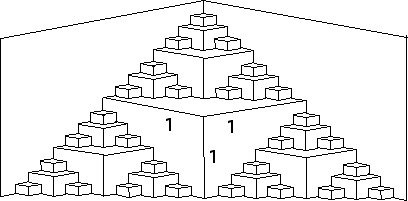

1. (b) The edges include all the cuts, so the easy answer is that the edges have infinite length.
For possible later use, we find the length of the edges at step n. Refer again to the picture of the first few steps to find the lengths of the folds.
|  |
Here is a tabulation of the lengths of the folds.
| step | number of folds | length/fold |
| 1 | 1 | 1 = 20 |
| 2 | 3 | 1/2 = 2-1 |
| 3 | 9 | 1/4 = 2-2 |
| 4 | 27 | 1/8 = 2-3 |
| ... | ||
| n | 3n-1 | 21-n |
So the total length of the folds is
The sum is a geometric series with ratio 3/2, hence it diverges.
In the nth step the edges have length
Return to PaperFolding Lab.